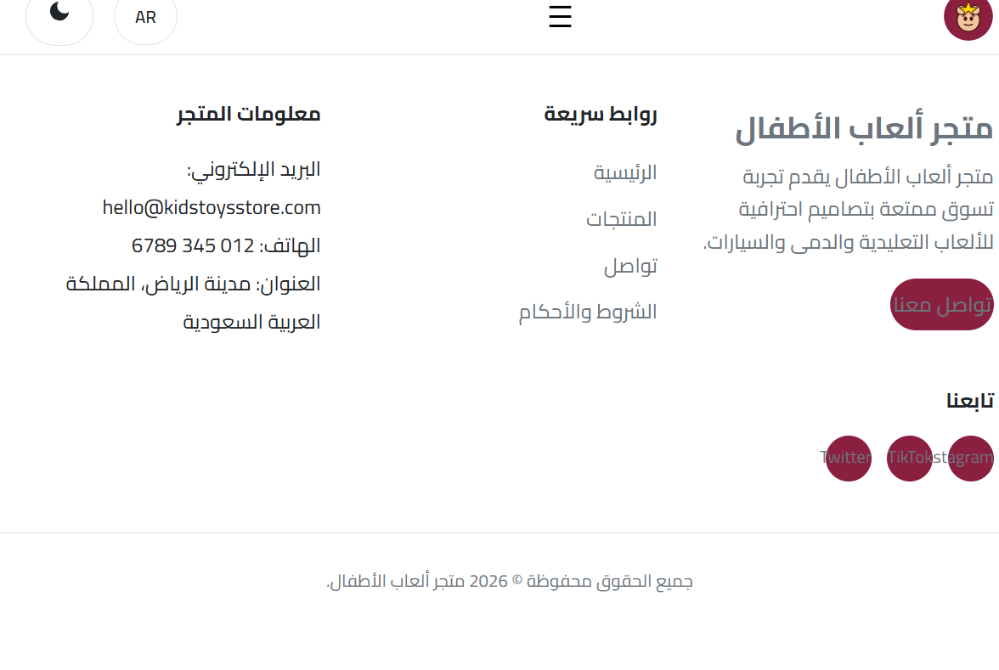
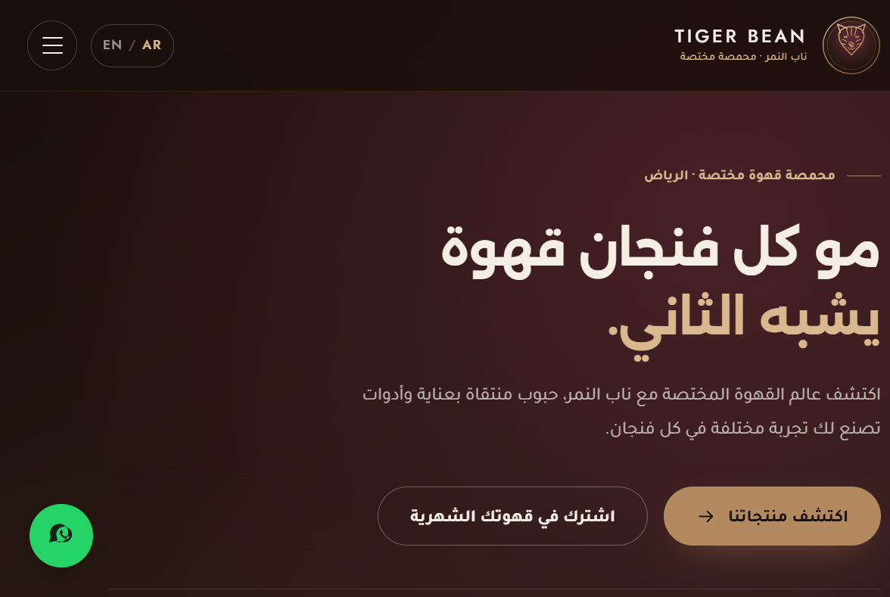

01
تطوير الصحافة الرقمية
عرض تقديمي
المقدمة: تسنيم الشريف
02
مقدمة
يوضح هذا العرض مسيرة تطوير الصحافة الرقمية ودور التقنية فيها.
يعرّف بالمواقع التي تم بناؤها وتجربة التعلم المستفادة منها.
يجمع بين المفهوم النظري والتطبيق العملي في بيئة ويب حديثة.
03
من أنا
تسنيم الشريف — مهتمة بتطوير الويب والصحافة الرقمية.
أعمل على بناء مواقع ويب حديثة وتجارب مستخدم واضحة.
أسعى لربط المعرفة الأكاديمية بالتطبيق العملي.
04
ما تعلّمته
أهمية التصميم المتجاوب (Responsive) لجميع الأجهزة.
قيمة الوضوح والبساطة في واجهات المستخدم.
ضرورة اختبار الروابط والتنقل قبل النشر.
05
Kids Toys Store

المشكلة:
الحاجة إلى متجر إلكتروني لعرض ألعاب الأطفال بطريقة واضحة.
ما فعلته:
بناء موقع متجاوب لعرض المنتجات مع تنقل سهل.
النتيجة:
واجهة واضحة تتيح تصفح المنتجات بسهولة على جميع الأجهزة.
زيارة الموقع
06
Jolly Wave

المشكلة:
الحاجة إلى صفحة ويب خفيفة وسريعة لعرض المحتوى.
ما فعلته:
تصميم صفحة متجاوبة بتحميل سريع وتجربة مستخدم بسيطة.
النتيجة:
موقع سريع وسهل الاستخدام على الهواتف والأجهزة اللوحية.
زيارة الموقع
07
خلاصة
الصحافة الرقمية تدمج التقنية مع المحتوى لتقديم تجربة أفضل.
التصميم المتجاوب والوضوح من أهم عوامل نجاح أي موقع.
التجربة (Kids Toys Store و Jolly Wave) أثبتت فعالية هذه المبادئ.
08
شكرًا لكم
رابط الموقع: https://kids-toys-store.mohamtasneem2.workers.dev/
البريد الإلكتروني: hello@kidstoysstore.com
أسئلتكم واقتراحاتكم مرحب بها.
01 / 08
«
»